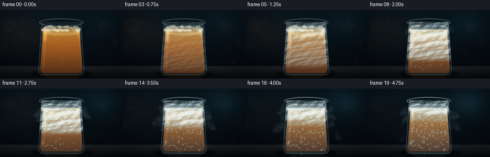
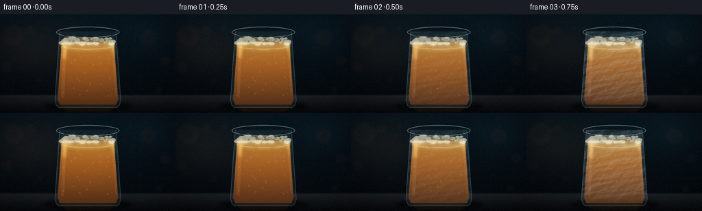
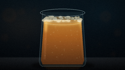
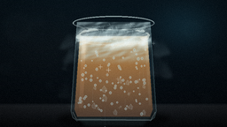
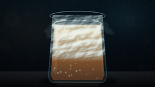
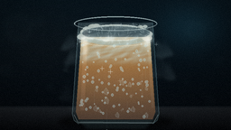
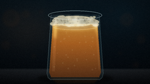
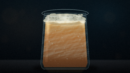
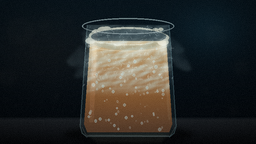

CODING AGENTS AS PIXEL WORLD MODELS
traex/DeepSeek-V4.1-Flash · phygen_095
点击播放 · 原生 RGB 像素
逐轮保存的候选
回放视频、检查图与代码变化。
每份候选均可单独播放。实际图片检查记录在下方工具轨迹中。
候选 01播放与检查图
点击播放 · 原生 RGB 像素

展开代码变化
--- 上一保存版本
+++ 本次保存版本
@@ -0,0 +1,512 @@
+from pathlib import Path
+import math
+
+import numpy as np
+from PIL import Image, ImageDraw, ImageFilter
+
+import artifact_io
+
+
+W, H = 256, 144
+N, FPS = 20, 4
+SS = 3
+SW, SH = W * SS, H * SS
+CASE_DIR = Path(__file__).resolve().parent
+RNG = np.random.default_rng(1905)
+
+
+def sc(value):
+ return int(round(value * SS))
+
+
+def sp(points):
+ return [(sc(x), sc(y)) for x, y in points]
+
+
+def sbox(box):
+ return tuple(sc(v) for v in box)
+
+
+def clamp(value, lo=0.0, hi=1.0):
+ return max(lo, min(hi, value))
+
+
+def smoothstep(edge0, edge1, value):
+ if edge0 == edge1:
+ return float(value >= edge1)
+ t = np.clip((value - edge0) / (edge1 - edge0), 0.0, 1.0)
+ return t * t * (3.0 - 2.0 * t)
+
+
+def mix(a, b, t):
+ t = clamp(t)
+ return tuple(int(round(a[i] * (1.0 - t) + b[i] * t)) for i in range(3))
+
+
+def rgba_layer():
+ return Image.new("RGBA", (SW, SH), (0, 0, 0, 0))
+
+
+def composite(base, layer):
+ return Image.alpha_composite(base, layer)
+
+
+def polygon_mask(points):
+ mask = Image.new("L", (SW, SH), 0)
+ ImageDraw.Draw(mask).polygon(sp(points), fill=255)
+ return np.asarray(mask, dtype=np.float32) / 255.0
+
+
+OUTER = [
+ (87, 25), (169, 25), (176, 126), (174, 133),
+ (169, 137), (87, 137), (82, 133), (80, 126),
+]
+BEER = [
+ (90, 41), (166, 41), (172, 124), (169, 132),
+ (87, 132), (84, 124),
+]
+OUTER_MASK = polygon_mask(OUTER)
+BEER_MASK = polygon_mask(BEER)
+
+
+YY, XX = np.mgrid[0:SH, 0:SW]
+XN = XX.astype(np.float32) / SW
+YN = YY.astype(np.float32) / SH
+
+
+def make_cloud_texture(seed, scale=1.0):
+ """Smooth deterministic cloud field made from a few seeded sinusoids."""
+ rng = np.random.default_rng(seed)
+ field = np.zeros((SH, SW), dtype=np.float32)
+ for _ in range(7):
+ fx = rng.uniform(2.0, 13.0) * scale
+ fy = rng.uniform(3.0, 17.0) * scale
+ phase = rng.uniform(0, 2 * np.pi)
+ field += np.sin(2 * np.pi * (fx * XN + fy * YN) + phase)
+ field = (field - field.min()) / (field.max() - field.min() + 1e-6)
+ return field
+
+
+FROST_NOISE = 0.62 * make_cloud_texture(17, 1.3) + 0.38 * make_cloud_texture(31, 2.8)
+FROST_NOISE = (FROST_NOISE - FROST_NOISE.min()) / (FROST_NOISE.max() - FROST_NOISE.min())
+BEER_NOISE = make_cloud_texture(83, 1.8)
+
+
+DROPLETS = []
+for i in range(92):
+ y = RNG.uniform(48, 130)
+ left = 82 + (130 - y) * 0.06
+ right = 174 - (130 - y) * 0.06
+ x = RNG.uniform(left + 4, right - 4)
+ radius = RNG.uniform(0.55, 1.55)
+ start = RNG.uniform(0.06, 0.78)
+ runner = i % 9 == 0
+ DROPLETS.append((x, y, radius, start, runner))
+
+
+BUBBLES = []
+for i in range(30):
+ x = RNG.uniform(91, 165)
+ y = RNG.uniform(52, 126)
+ radius = RNG.uniform(0.35, 1.15)
+ speed = RNG.uniform(0.6, 1.8)
+ phase = RNG.uniform(0, 2 * np.pi)
+ BUBBLES.append((x, y, radius, speed, phase))
+
+
+VAPOR = []
+for i in range(42):
+ side = -1 if i % 2 == 0 else 1
+ x = 128 + side * RNG.uniform(33, 47)
+ y = RNG.uniform(28, 42)
+ start = int(RNG.integers(5, 17))
+ life = int(RNG.integers(8, 14))
+ vx = side * RNG.uniform(0.65, 2.1)
+ vy = RNG.uniform(1.0, 3.4)
+ size = RNG.uniform(3.5, 8.0)
+ VAPOR.append((x, y, start, life, vx, vy, size))
+
+
+SPARKLES = []
+for i in range(22):
+ y = RNG.uniform(30, 127)
+ x = RNG.uniform(84, 173)
+ phase = RNG.uniform(0, 2 * np.pi)
+ SPARKLES.append((x, y, phase, RNG.uniform(0.8, 1.6)))
+
+
+FROST_SPECKS = []
+for i in range(520):
+ x = RNG.uniform(81, 176)
+ y = RNG.uniform(26, 136)
+ if OUTER_MASK[int(y * SS), int(x * SS)] > 0.5:
+ length = RNG.uniform(0.45, 1.55)
+ angle = RNG.uniform(0, np.pi)
+ FROST_SPECKS.append((x, y, length, angle, RNG.uniform(0.35, 1.0)))
+
+
+def background(frame, p):
+ y = np.linspace(0.0, 1.0, SH, dtype=np.float32)[:, None]
+ top = np.array([10, 24, 33], dtype=np.float32)
+ bottom = np.array([5, 8, 12], dtype=np.float32)
+ arr = top[None, None, :] * (1.0 - y[:, :, None]) + bottom[None, None, :] * y[:, :, None]
+ arr = np.repeat(arr, SW, axis=1)
+
+ # A restrained warm bar glow fades as the glass becomes cold.
+ warm_glow = np.exp(-(((XN - 0.18) / 0.42) ** 2 + ((YN - 0.34) / 0.52) ** 2) * 4.0)
+ cool_glow = np.exp(-(((XN - 0.82) / 0.30) ** 2 + ((YN - 0.20) / 0.42) ** 2) * 5.0)
+ warm_amt = 0.20 * (1.0 - 0.72 * p)
+ cool_amt = 0.05 + 0.16 * p
+ arr += warm_glow[:, :, None] * np.array([79, 43, 17])[None, None, :] * warm_amt
+ arr += cool_glow[:, :, None] * np.array([35, 100, 122])[None, None, :] * cool_amt
+
+ # Dark polished bar top.
+ table = YN >= 0.825
+ table_grad = np.clip((YN - 0.825) / 0.175, 0, 1)
+ table_rgb = (
+ np.array([30, 34, 38])[None, None, :] * (1 - table_grad[:, :, None])
+ + np.array([7, 9, 12])[None, None, :] * table_grad[:, :, None]
+ )
+ arr[table] = table_rgb[table]
+ arr[YY == sc(118)] = np.array([54, 62, 65])
+ arr[YY == sc(119)] = np.array([32, 38, 42])
+
+ image = Image.fromarray(np.clip(arr, 0, 255).astype(np.uint8), "RGB").convert("RGBA")
+
+ bokeh = rgba_layer()
+ bd = ImageDraw.Draw(bokeh)
+ spots = [
+ (19, 31, 18), (43, 24, 8), (8, 77, 10), (57, 96, 6),
+ (217, 34, 13), (242, 67, 9), (205, 91, 5), (231, 111, 7),
+ (69, 20, 5), (190, 18, 4),
+ ]
+ warm = mix((184, 91, 38), (87, 159, 181), 0.78 * p)
+ for i, (bx, by, radius) in enumerate(spots):
+ pulse = 0.90 + 0.08 * math.sin(frame * 0.41 + i * 1.7)
+ rr = radius * pulse
+ cx, cy = sc(bx + 1.5 * math.sin(i + frame * 0.08)), sc(by)
+ for k in range(6, 0, -1):
+ alpha = int((5.5 + k * 2.1) * (1.0 - 0.48 * p))
+ box = (cx - sc(rr * k / 6), cy - sc(rr * k / 6),
+ cx + sc(rr * k / 6), cy + sc(rr * k / 6))
+ bd.ellipse(box, fill=(*warm, alpha))
+ bokeh = bokeh.filter(ImageFilter.GaussianBlur(sc(2.6)))
+ image = composite(image, bokeh)
+
+ # A broad, soft shadow grounds the glass.
+ shadow = rgba_layer()
+ sd = ImageDraw.Draw(shadow)
+ sd.ellipse(sbox((64, 126, 193, 143)), fill=(0, 0, 0, 150))
+ sd.ellipse(sbox((78, 129, 180, 142)), fill=(0, 0, 0, 120))
+ shadow = shadow.filter(ImageFilter.GaussianBlur(sc(2.2)))
+ return composite(image, shadow)
+
+
+def add_reflection(scene, p):
+ layer = rgba_layer()
+ d = ImageDraw.Draw(layer)
+ color = mix((144, 75, 17), (103, 153, 160), p)
+ reflection = [
+ (84, 132), (172, 132), (161, 143), (96, 143),
+ ]
+ d.polygon(sp(reflection), fill=(*color, 34))
+ d.line(sp([(90, 134), (165, 134)]), fill=(*mix((230, 167, 68), (177, 221, 225), p), 36),
+ width=sc(1.2))
+ layer = layer.filter(ImageFilter.GaussianBlur(sc(1.3)))
+ return composite(scene, layer)
+
+
+def gradient_inside(mask, colors, alpha_scale=1.0):
+ top = np.array(colors[0], dtype=np.float32)
+ mid = np.array(colors[1], dtype=np.float32)
+ bottom = np.array(colors[2], dtype=np.float32)
+ y = np.clip((YY / SH - 0.18) / 0.72, 0, 1)
+ lower = y[:, :, None]
+ rgb = np.where(lower < 0.46, top + (mid - top) * (lower / 0.46),
+ mid + (bottom - mid) * ((lower - 0.46) / 0.54))
+ alpha = (mask * 255.0 * alpha_scale)[:, :, None]
+ arr = np.dstack([rgb, alpha]).clip(0, 255).astype(np.uint8)
+ return Image.fromarray(arr, "RGBA")
+
+
+def add_beer(scene, frame, p):
+ beer_colors = [
+ mix((224, 153, 47), (209, 172, 121), 0.66 * p),
+ mix((181, 91, 18), (163, 119, 73), 0.70 * p),
+ mix((104, 45, 9), (91, 77, 70), 0.62 * p),
+ ]
+ beer = gradient_inside(BEER_MASK, beer_colors, 0.96)
+ scene = composite(scene, beer)
+
+ # Cloudy freezing front rises through the liquid.
+ heightnorm = np.clip((132 - YY / SS) / (132 - 41), 0, 1)
+ front = 0.03 + 0.68 * p
+ freeze_gate = smoothstep(front - 0.08, front + 0.07, heightnorm)
+ texture = smoothstep(0.22, 0.82, 0.58 * FROST_NOISE + 0.42 * BEER_NOISE)
+ freeze_alpha = (BEER_MASK * freeze_gate * (0.16 + 0.50 * texture) * smoothstep(0.10, 0.52, p))
+ cloud = np.zeros((SH, SW, 4), dtype=np.uint8)
+ cloud[:, :, 0] = 198
+ cloud[:, :, 1] = 216
+ cloud[:, :, 2] = 210
+ cloud[:, :, 3] = np.clip(freeze_alpha * 255, 0, 255).astype(np.uint8)
+ scene = composite(scene, Image.fromarray(cloud, "RGBA"))
+
+ # Tiny carbonation is most visible while the beer is still liquid.
+ bubbles = rgba_layer()
+ bd = ImageDraw.Draw(bubbles)
+ fade = 1.0 - 0.82 * smoothstep(0.28, 0.85, p)
+ for i, (x, y0, radius, speed, phase) in enumerate(BUBBLES):
+ y = y0 - ((frame * speed + phase) % 42)
+ if y < 48:
+ y += 42
+ if BEER_MASK[int(y * SS), int(x * SS)] < 0.4:
+ continue
+ alpha = int((45 + 35 * (1 - p)) * fade)
+ bd.ellipse(sbox((x - radius, y - radius, x + radius, y + radius)),
+ outline=(245, 226, 171, alpha), width=max(1, sc(0.35)))
+ if radius > 0.8:
+ bd.point((sc(x - radius * 0.25), sc(y - radius * 0.25)),
+ fill=(255, 248, 218, min(180, alpha + 55)))
+ scene = composite(scene, bubbles)
+
+ # Angular ice shards appear in the coldest half of the timelapse.
+ if p > 0.43:
+ ice = rgba_layer()
+ d = ImageDraw.Draw(ice)
+ rng = np.random.default_rng(402)
+ for i in range(15):
+ cx = rng.uniform(91, 165)
+ cy = rng.uniform(91, 128)
+ size = rng.uniform(2.0, 5.6)
+ grow = smoothstep(0.43, 0.93, p) * rng.uniform(0.55, 1.0)
+ pts = [
+ (cx, cy - size * grow),
+ (cx + size * 0.58 * grow, cy - size * 0.12),
+ (cx + size * 0.34 * grow, cy + size * 0.74 * grow),
+ (cx - size * 0.47 * grow, cy + size * 0.45 * grow),
+ (cx - size * 0.60 * grow, cy - size * 0.20),
+ ]
+ if BEER_MASK[int(cy * SS), int(cx * SS)] > 0.5:
+ d.polygon(sp(pts), fill=(201, 229, 232, 34), outline=(231, 249, 250, 84))
+ d.line(sp([pts[0], pts[2]]), fill=(245, 255, 255, 74), width=sc(0.45))
+ scene = composite(scene, ice)
+ return scene
+
+
+def add_foam(scene, frame, p):
+ foam = rgba_layer()
+ d = ImageDraw.Draw(foam)
+ base_color = mix((244, 222, 172), (218, 238, 239), 0.80 * p)
+ shade = mix((184, 136, 73), (146, 190, 199), 0.75 * p)
+
+ # A lumpy creamy head that gradually turns into frozen slush.
+ d.ellipse(sbox((88, 34, 168, 48)), fill=(*shade, 155))
+ rng = np.random.default_rng(73)
+ for i in range(35):
+ x = rng.uniform(90, 165)
+ y = rng.uniform(35, 43)
+ r = rng.uniform(2.0, 5.0)
+ col = mix(base_color, (255, 249, 221), rng.uniform(0.1, 0.55))
+ d.ellipse(sbox((x - r, y - r * 0.62, x + r, y + r * 0.62)),
+ fill=(*col, 178))
+ for i in range(26):
+ x = rng.uniform(92, 163)
+ y = rng.uniform(36, 43)
+ r = rng.uniform(0.45, 1.35)
+ d.ellipse(sbox((x - r, y - r, x + r, y + r)),
+ outline=(*shade, 105), width=max(1, sc(0.32)))
+
+ if p > 0.28:
+ # Icy glaze and small crystal points form across the head.
+ d.ellipse(sbox((91, 34, 166, 44)), fill=(205, 235, 239, int(65 * smoothstep(0.28, 0.8, p))))
+ for i in range(18):
+ x = rng.uniform(94, 161)
+ y = rng.uniform(33, 39)
+ h = rng.uniform(1.2, 3.7) * smoothstep(0.35, 0.95, p)
+ d.line(sp([(x, y + 1.5), (x + rng.uniform(-1.2, 1.2), y - h)]),
+ fill=(229, 249, 251, int(145 * smoothstep(0.35, 0.95, p))),
+ width=max(1, sc(0.35)))
+
+ # Fine cream-colored rim shadow separates foam from the glass.
+ d.arc(sbox((88, 39, 168, 51)), 5, 175, fill=(255, 247, 216, 110), width=sc(0.7))
+ scene = composite(scene, foam)
+ return scene
+
+
+def add_condensation(scene, p):
+ drops = rgba_layer()
+ d = ImageDraw.Draw(drops)
+ for x, y0, radius, start, runner in DROPLETS:
+ active = smoothstep(start, min(1.0, start + 0.30), p)
+ if active <= 0.02:
+ continue
+ slide = 0.0
+ if runner and p > start + 0.24:
+ slide = (p - start - 0.24) * 42.0
+ y = y0 + slide
+ r = radius * (0.32 + 0.68 * active)
+ alpha = int(105 * active)
+ if runner and slide > 1.5:
+ trail_alpha = int(30 * active)
+ d.line(sp([(x, y0 - 1.0), (x + 0.15 * math.sin(y * 0.8), y - r)]),
+ fill=(209, 236, 238, trail_alpha), width=max(1, sc(0.40)))
+ d.ellipse(sbox((x - r, y - r * 1.15, x + r, y + r * 1.15)),
+ fill=(174, 213, 219, alpha), outline=(232, 249, 250, min(220, alpha + 50)),
+ width=max(1, sc(0.28)))
+ if r > 0.85:
+ d.point((sc(x - r * 0.26), sc(y - r * 0.35)),
+ fill=(255, 255, 250, min(245, alpha + 85)))
+ scene = composite(scene, drops)
+ return scene
+
+
+def add_glass_and_frost(scene, frame, p):
+ # Transparent glass body and thick base.
+ glass = rgba_layer()
+ d = ImageDraw.Draw(glass)
+ d.polygon(sp(OUTER), fill=(101, 151, 162, 27))
+ d.line(sp([(87, 25), (80, 126), (82, 133), (87, 137)]),
+ fill=(161, 204, 210, 78), width=sc(1.0))
+ d.line(sp([(169, 25), (176, 126), (174, 133), (169, 137)]),
+ fill=(140, 196, 207, 74), width=sc(1.0))
+ d.line(sp([(87, 136), (169, 136)]), fill=(196, 228, 230, 64), width=sc(1.15))
+ d.ellipse(sbox((82, 18, 174, 34)), outline=(196, 227, 228, 138), width=sc(1.15))
+ d.arc(sbox((82, 18, 174, 34)), 8, 172, fill=(234, 250, 249, 118), width=sc(0.55))
+
+ # Soft vertical window reflections.
+ d.line(sp([(95, 31), (91, 122)]), fill=(220, 242, 241, 28), width=sc(4.5))
+ d.line(sp([(96, 33), (93, 111)]), fill=(240, 251, 248, 26), width=sc(1.15))
+ d.line(sp([(163, 31), (169, 119)]), fill=(165, 218, 225, 30), width=sc(2.5))
+ scene = composite(scene, glass)
+
+ # Rime advances upward from the base with noisy, irregular edges.
+ heightnorm = np.clip((136 - YY / SS) / (136 - 25), 0, 1)
+ front = 0.015 + 0.79 * p
+ edge_boost = 0.06 * (1.0 - np.abs(XN - 0.5) * 2.0)
+ gate = smoothstep(front - 0.075, front + 0.055, heightnorm + edge_boost)
+ rime_texture = smoothstep(0.24, 0.86, FROST_NOISE)
+ frost_alpha = OUTER_MASK * gate * (0.18 + 0.62 * rime_texture) * smoothstep(0.02, 0.40, p)
+ frost_rgb = np.zeros((SH, SW, 4), dtype=np.uint8)
+ frost_rgb[:, :, 0] = 205
+ frost_rgb[:, :, 1] = 235
+ frost_rgb[:, :, 2] = 239
+ frost_rgb[:, :, 3] = np.clip(frost_alpha * 205, 0, 255).astype(np.uint8)
+ rime = Image.fromarray(frost_rgb, "RGBA").filter(ImageFilter.GaussianBlur(sc(0.32)))
+ scene = composite(scene, rime)
+
+ # Needle-like specks make the rime read as crystals rather than fog.
+ crystals = rgba_layer()
+ cd = ImageDraw.Draw(crystals)
+ for x, y, length, angle, strength in FROST_SPECKS:
+ hn = clamp((136 - y) / (136 - 25))
+ threshold = 0.015 + 0.79 * p + (0.5 - strength) * 0.12
+ if hn < threshold:
+ continue
+ a = int((62 + 80 * strength) * smoothstep(0.06, 0.72, p))
+ dx = math.cos(angle) * length
+ dy = math.sin(angle) * length
+ cd.line(sp([(x - dx, y - dy), (x + dx, y + dy)]),
+ fill=(226, 247, 249, a), width=max(1, sc(0.30)))
+ if strength > 0.72:
+ cd.line(sp([(x - dy * 0.55, y + dx * 0.55),
+ (x + dy * 0.55, y - dx * 0.55)]),
+ fill=(232, 250, 251, a // 2), width=max(1, sc(0.25)))
+
+ # Frost also gathers on the rim and lower edge.
+ if p > 0.42:
+ rim_a = int(105 * smoothstep(0.42, 0.88, p))
+ cd.arc(sbox((82, 18, 174, 34)), 170, 352, fill=(229, 249, 249, rim_a), width=sc(1.5))
+ cd.line(sp([(82, 127), (86, 135), (170, 136), (175, 127)]),
+ fill=(215, 241, 243, int(rim_a * 0.8)), width=sc(1.1))
+ scene = composite(scene, crystals)
+ return scene
+
+
+def add_vapor(scene, frame, p):
+ vapor = rgba_layer()
+ d = ImageDraw.Draw(vapor)
+ for x, y, start, life, vx, vy, size in VAPOR:
+ age = frame - start
+ if age < 0 or age > life:
+ continue
+ fade = math.sin(math.pi * clamp(age / max(1, life))) ** 0.8
+ for trail in range(4):
+ tt = age - trail * 0.65
+ if tt < 0:
+ continue
+ cx = x + vx * tt + 0.9 * math.sin(tt * 0.85 + x)
+ cy = y + vy * tt + 0.35 * tt * tt
+ rr = size * (0.50 + tt / max(2.0, life)) * (1.0 - trail * 0.12)
+ alpha = int(34 * fade * (1.0 - trail * 0.20))
+ if alpha <= 0:
+ continue
+ d.ellipse(sbox((cx - rr, cy - rr * 0.42, cx + rr, cy + rr * 0.42)),
+ fill=(186, 224, 231, alpha))
+ vapor = vapor.filter(ImageFilter.GaussianBlur(sc(1.7)))
+ return composite(scene, vapor)
+
+
+def add_sparkles(scene, frame, p):
+ if p < 0.38:
+ return scene
+ layer = rgba_layer()
+ d = ImageDraw.Draw(layer)
+ strength = smoothstep(0.38, 0.88, p)
+ for x, y, phase, scale in SPARKLES:
+ flicker = max(0.0, math.sin(frame * 1.47 + phase)) ** 2
+ a = int(210 * strength * flicker)
+ if a < 8:
+ continue
+ arm = 1.7 * scale * (0.65 + 0.35 * flicker)
+ d.line(sp([(x - arm, y), (x + arm, y)]), fill=(235, 252, 253, a), width=max(1, sc(0.26)))
+ d.line(sp([(x, y - arm), (x, y + arm)]), fill=(235, 252, 253, a), width=max(1, sc(0.26)))
+ d.point((sc(x), sc(y)), fill=(255, 255, 247, min(255, a + 25)))
+ return composite(scene, layer)
+
+
+def finish(scene, frame):
+ rgb = scene.convert("RGB")
+
+ # Gentle bloom preserves the glass highlights without washing out the beer.
+ small = rgb.resize((W, H), Image.Resampling.LANCZOS)
+ arr = np.asarray(small).astype(np.float32)
+ lum = arr.max(axis=2)
+ bloom_arr = np.zeros_like(arr)
+ hot = lum > 185
+ bloom_arr[hot] = arr[hot]
+ bloom = Image.fromarray(bloom_arr.astype(np.uint8), "RGB").filter(ImageFilter.GaussianBlur(2.1))
+ arr = 255.0 - (255.0 - arr) * (255.0 - np.asarray(bloom).astype(np.float32)) / 255.0
+
+ # Vignette and a touch of temporal grain.
+ yy, xx = np.mgrid[0:H, 0:W]
+ nx = (xx - W * 0.5) / (W * 0.56)
+ ny = (yy - H * 0.48) / (H * 0.62)
+ vignette = np.clip(1.0 - 0.26 * (nx * nx + ny * ny), 0.68, 1.0)
+ arr *= vignette[:, :, None]
+ rng = np.random.default_rng(900 + frame)
+ grain = rng.normal(0.0, 1.45, (H, W, 1))
+ arr += grain
+ return np.clip(arr, 0, 255).astype(np.uint8)
+
+
+def render(frame):
+ p = frame / (N - 1)
+ scene = background(frame, p)
+ scene = add_reflection(scene, p)
+ scene = add_beer(scene, frame, p)
+ scene = add_foam(scene, frame, p)
+ scene = add_condensation(scene, p)
+ scene = add_glass_and_frost(scene, frame, p)
+ scene = add_vapor(scene, frame, p)
+ scene = add_sparkles(scene, frame, p)
+ return finish(scene, frame)
+
+
+def main():
+ frames = np.stack([render(i) for i in range(N)])
+ artifact_io.save(frames, CASE_DIR)
+ print(f"Saved {N} frames to {CASE_DIR}")
+
+
+if __name__ == "__main__":
+ main()
候选 02播放与检查图
点击播放 · 原生 RGB 像素

展开代码变化
--- 上一保存版本
+++ 本次保存版本
@@ -299,36 +299,38 @@
base_color = mix((244, 222, 172), (218, 238, 239), 0.80 * p)
shade = mix((184, 136, 73), (146, 190, 199), 0.75 * p)
- # A lumpy creamy head that gradually turns into frozen slush.
- d.ellipse(sbox((88, 34, 168, 48)), fill=(*shade, 155))
+ # A thick, uneven head gives the glass the silhouette of poured beer.
+ d.ellipse(sbox((88, 27, 168, 50)), fill=(*shade, 172))
+ d.ellipse(sbox((92, 27, 164, 45)), fill=(*base_color, 212))
+ d.rectangle(sbox((92, 35, 164, 42)), fill=(*base_color, 210))
rng = np.random.default_rng(73)
- for i in range(35):
+ for i in range(48):
x = rng.uniform(90, 165)
- y = rng.uniform(35, 43)
- r = rng.uniform(2.0, 5.0)
+ y = rng.uniform(29, 43)
+ r = rng.uniform(1.8, 5.5)
col = mix(base_color, (255, 249, 221), rng.uniform(0.1, 0.55))
d.ellipse(sbox((x - r, y - r * 0.62, x + r, y + r * 0.62)),
- fill=(*col, 178))
- for i in range(26):
+ fill=(*col, 190))
+ for i in range(38):
x = rng.uniform(92, 163)
- y = rng.uniform(36, 43)
+ y = rng.uniform(30, 44)
r = rng.uniform(0.45, 1.35)
d.ellipse(sbox((x - r, y - r, x + r, y + r)),
outline=(*shade, 105), width=max(1, sc(0.32)))
if p > 0.28:
# Icy glaze and small crystal points form across the head.
- d.ellipse(sbox((91, 34, 166, 44)), fill=(205, 235, 239, int(65 * smoothstep(0.28, 0.8, p))))
- for i in range(18):
+ d.ellipse(sbox((91, 29, 166, 44)), fill=(205, 235, 239, int(65 * smoothstep(0.28, 0.8, p))))
+ for i in range(24):
x = rng.uniform(94, 161)
- y = rng.uniform(33, 39)
+ y = rng.uniform(28, 38)
h = rng.uniform(1.2, 3.7) * smoothstep(0.35, 0.95, p)
d.line(sp([(x, y + 1.5), (x + rng.uniform(-1.2, 1.2), y - h)]),
fill=(229, 249, 251, int(145 * smoothstep(0.35, 0.95, p))),
width=max(1, sc(0.35)))
# Fine cream-colored rim shadow separates foam from the glass.
- d.arc(sbox((88, 39, 168, 51)), 5, 175, fill=(255, 247, 216, 110), width=sc(0.7))
+ d.arc(sbox((88, 38, 168, 51)), 5, 175, fill=(255, 247, 216, 110), width=sc(0.7))
scene = composite(scene, foam)
return scene
@@ -382,10 +384,15 @@
# Rime advances upward from the base with noisy, irregular edges.
heightnorm = np.clip((136 - YY / SS) / (136 - 25), 0, 1)
front = 0.015 + 0.79 * p
- edge_boost = 0.06 * (1.0 - np.abs(XN - 0.5) * 2.0)
- gate = smoothstep(front - 0.075, front + 0.055, heightnorm + edge_boost)
+ # Rime accumulates most heavily near the sidewalls so the liquid stays legible.
+ sidewall = smoothstep(0.54, 0.91, np.abs(XN - 0.5) * 2.0)
+ gate = smoothstep(front - 0.075, front + 0.055, heightnorm + 0.10 * sidewall)
rime_texture = smoothstep(0.24, 0.86, FROST_NOISE)
- frost_alpha = OUTER_MASK * gate * (0.18 + 0.62 * rime_texture) * smoothstep(0.02, 0.40, p)
+ interior = smoothstep(0.03, 0.25, np.minimum.reduce([
+ np.abs(XN - 80 / W), np.abs(XN - 176 / W),
+ ]))
+ edge_weight = 0.42 + 0.58 * sidewall
+ frost_alpha = OUTER_MASK * gate * (0.10 + 0.42 * rime_texture) * edge_weight * smoothstep(0.02, 0.40, p)
frost_rgb = np.zeros((SH, SW, 4), dtype=np.uint8)
frost_rgb[:, :, 0] = 205
frost_rgb[:, :, 1] = 235
候选 03播放与检查图
可观测工具轨迹
实际执行的命令与返回图片。
命令 1exit 0
/bin/bash -c "pwd && rg --files -g 'prompt.txt' -g 'GENERATION_RULES.md' -g 'task_spec.json' -g '"'!**/.git/**'"'"
命令 2exit 0
/bin/bash -c 'ls -la'
命令 3exit 0
/bin/bash -c 'cat prompt.txt'
命令 4exit 0
/bin/bash -c 'cat GENERATION_RULES.md'
命令 5exit 0
/bin/bash -c 'cat task_spec.json'
命令 6exit 0
/bin/bash -c "sed -n '1,240p' artifact_io.py"
命令 7exit 0
/bin/bash -c 'python generate.py'
命令 8exit 0
/bin/bash -c 'mkdir -p .tmp/candidate_01 && cp -r frames inspection.png transition_check.png .tmp/candidate_01/'
命令 9exit 0
/bin/bash -c 'python generate.py'
命令 10exit 1
/bin/bash -c "mkdir -p .tmp/candidate_02 && cp -r frames inspection.png transition_check.png .tmp/candidate_02/ && python - <<'PY'
import numpy as np
z = np.load('pixels.npz')['pixels']
print('pixels.npz:', z.shape, z.dtype)
print('distinct frames:', len({z[:, :, i].tobytes() for i in range(z.shape[2])}))
print('frame mean RGB:', [tuple(np.round(z[:, :, i].mean(axis=(0,1)), 1)) for i in (0, 9, 19)])
PY"命令 11exit 0
/bin/bash -c "python - <<'PY'
from pathlib import Path
import numpy as np
from PIL import Image
case = Path('.')
z = np.load(case / 'pixels.npz')['pixels']
assert z.shape == (144, 256, 20), z.shape
assert len({z[:, :, i].tobytes() for i in range(z.shape[2])}) == 20
assert (case / 'generate.py').is_file()
assert (case / 'index.html').is_file()
assert len(list((case / 'frames').glob('*.png'))) == 20
for path in sorted((case / 'frames').glob('*.png')):
with Image.open(path) as im:
assert im.size == (256, 144) and im.mode == 'RGB', (path, im.size, im.mode)
print('validated: 20 RGB frames, 256x144, all distinct')
print('index.html bytes:', (case / 'index.html').stat().st_size)
print('pixels.npz bytes:', (case / 'pixels.npz').stat().st_size)
PY"视觉工具实际返回图片 1

视觉工具实际返回图片 2

视觉工具实际返回图片 3

视觉工具实际返回图片 4

视觉工具实际返回图片 5

视觉工具实际返回图片 6

视觉工具实际返回图片 7

视觉工具实际返回图片 8

视觉工具实际返回图片 9

视觉工具实际返回图片 10

保存候选 3 份；完成命令 11 次；可验证图片返回 10 张。原始 API 响应与完整日志保留在本地。